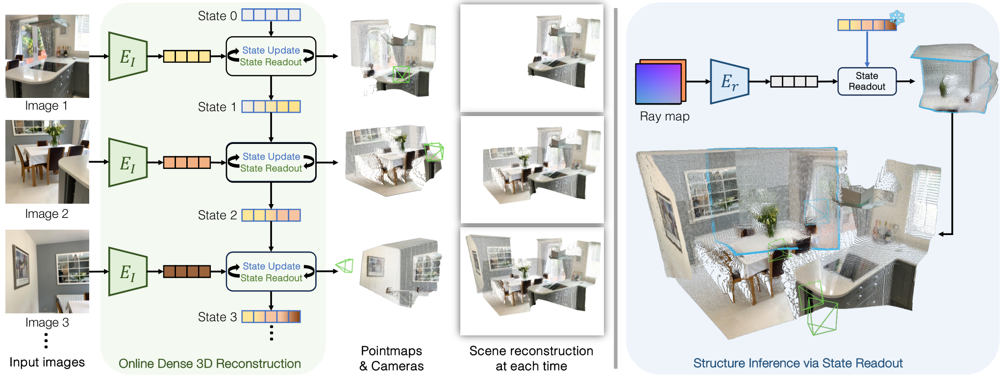

Overview
01 · The Problem and the Main Claim
传统两视图网络一次只处理一对图像。要得到整段序列的重建，往往还需把多对结果对齐。CUT3R 希望新图像到达时直接产生当前结果，同时保留一份能被下一帧继续使用的内部状态。输入不需要预先提供相机内参或位姿。
它的两个目标需要分开：第一是从实际图像持续预测几何与相机；第二是给定一个虚拟相机，从已经形成的状态里查询该视角的空间结构。后者可能涉及没有直接观察到的区域，因而既使用历史证据，也使用训练学到的场景先验。
一句话抓住方法：每一帧同时“从状态读信息”和“把新证据写回状态”。它不是给每个历史帧新增一份长期缓存，而是持续修改同一组状态 token。
Prerequisites
02 · Point Maps and Coordinate Frames
深度图在每个像素位置给一个标量；point map 在同一像素位置给一个三维坐标向量。它依然是 H×W 的网格，但每个格子保存 (x,y,z)。所以“点图”既有图像位置，又指向三维空间，保留了二维像素与三维点的对应关系。
相机坐标系跟随当前相机移动；世界坐标系是整段序列共享的参照。CUT3R 将第一张图的相机坐标定义为世界坐标。若每帧只给出自己的相机系点图，把这些点直接叠起来会使各帧都聚集在自己的原点附近；需要共同坐标或相机到世界的变换才能拼接。
同一个三维点可以用下面的刚体变换表达。R 是旋转，t 是平移。这个公式是坐标变换的基础，不代表网络必须显式用这一式生成全部输出。原方法同时监督两套点图和位姿，使不同标注的数据也可以参与训练。
X_world(u,v) = R_camera→world · X_camera(u,v) + t_camera→world
Architecture
03 · Figure 3: Observations and Queries

Qianqian Wang et al., 2025 · CC BY 4.0 · Unmodified original figure · Paper & Caption ↗
左边从上往下看：Image 1 编码后与 State 0 交互，得到第一帧结果与 State 1；第二帧再与 State 1 交互。竖直的状态链才是跨时间传递信息的通道。右侧每一行显示当前点图和累计重建，累计点云不是内部状态本身。
绿色框内的 State Update 与 State Readout 是交互的两个方向。状态 token 从当前图像获取新信息；图像 token 从已有状态获取过去的信息。作者用互相连接的 Transformer decoder 实现这种交互，块间双方相互 cross-attend。
右半边输入的是 Ray map，不是新的 RGB。冻结标志表示查询时不更新场景状态：查询“从这里看会是什么样”没有带来真实新证据。蓝色边框点云是查询输出，不能当作已经被传感器观测证实的事实。
Forward Pass
04 · Processing One Frame Step by Step
步骤一，图像编码器把当前帧变成视觉 token，并在这一路加入 pose token，用于聚合相机运动相关信息。步骤二，图像与上一时刻的状态共同进入 decoder。此处读和写是耦合交互，不应把它理解成先做一个独立检索器，再单独执行数据库写入。
步骤三，增强后的视觉特征被解码成相机系与世界系的 point map，以及对应置信度；pose token 还用于预测相机到世界的变换。步骤四，把更新后的状态交给下一帧。
原文实现的状态包含 768 个 token，每个维度为 768。状态 token 数量不随已处理帧数增长，这是与保存全部历史 KV 的根本区别。代价是所有过去的可用信息都要经过这个固定维度的表示传递。
不要把一个状态 token 理解成一个固定体素或一个固定对象：原文使用的是学习到的潜在表示，没有给出每个槽位都对应确定物体的约束。状态“包含空间信息”与状态“具有显式空间地址”也不是同一句话。
当前图像 → 图像特征 F_t (F_t, 旧状态 s_(t−1)) → 增强特征 F′_t、新状态 s_t 增强特征与 pose token → 两套点图、置信度与位姿
State Readout
05 · Querying the State Without an RGB Image
Ray map 为虚拟相机的每个像素指定射线原点与方向，可用六个通道表达。它告诉模型“想从哪里、朝哪个方向看”，但没有提供该方向的实际颜色。作者用轻量 ray encoder 编码，再通过同一个场景状态读出点图与颜色。
查询模式有两个信息来源：已观测区域可以利用状态中的历史证据；没见过的区域只能更多依赖训练先验。即使输出视觉上连贯，也不能把所有点赋予与真实观测同等的确定性。
这对 memory 研究很有启发：只测试当前帧，模型可能主要依靠当前图像完成任务；换成不携带 RGB 的空间查询，更能暴露状态究竟存下了什么。不过，查询质量仍同时受生成先验影响，所以还应把已见区域与未见区域分开评分。
Training
06 · Training: Why Predict Related Geometric Quantities?
原文同时训练两套点图与位姿。表面上它们存在几何关系，似乎可以只预测其中一部分；但直接监督多个输出能使用不同形式的标注，例如只有单帧深度的数据，或只有相机运动标注的数据。训练接口的冗余换来了数据兼容性。
点图损失带有置信度项。用简化形式 L=c·e−αlog(c) 理解：e 是预测误差；第一项允许模型降低不可靠像素的权重，但第二项防止所有置信度都降到零。置信度是随训练学到的权重，不能无条件解释为校准过的真实概率。
课程先用短序列学习，再引入动态与部分标注数据，提高分辨率，最后冻结图像编码器，在 4–64 视图的更长序列上训练 decoder 和输出头。虚拟视角训练只在有米制三维标注的数据上启用，并保留第一帧作为实际图像。
回想状态链：后续预测的误差能训练状态如何读写。这不同于人工规定“遇到某一类物体就保留”；写入内容最终受几何与查询任务共同影响。
Experimental Evidence
07 · Table 2: Online Inference and Reconstruction Accuracy
下面摘录视频深度实验中“整段序列只做一个尺度对齐”的三行。Abs Rel 是平均相对深度误差，越小越好。单个全局尺度不能修正每帧各自不同的尺度漂移，因此这一协议比逐帧自由缩放更能暴露时间一致性问题。
CUT3R 在 Bonn 上的 0.078 好于在线 Spann3R 的 0.144，但弱于需要优化的 MonST3R-GA 的 0.067。在 KITTI 上它又优于这两行。不能用一个数据集的获胜来替代跨域结论。
作者报告 CUT3R 的 KITTI 推理为 16.58 FPS，使用 A100、512×144 输入。Spann3R 的输入分辨率不同，因此速度数字不能当成严格同输入算力对照；重建精度也要结合分辨率看。
原文局限性部分指出，缺少全局对齐使很长序列仍可能漂移。另一个需要单独测试的问题是遗忘：固定状态字节数不增长，并不保证过去所有细节都能长期无损保留；这属于容量分析，不能冒充作者已完成的专门遗忘实验。
| Table 2: Per-Sequence Scale Alignment | Sintel Abs Rel ↓ | Bonn Abs Rel ↓ | KITTI Abs Rel ↓ | Inference |
|---|---|---|---|---|
| MonST3R-GA | 0.378 | 0.067 | 0.168 | 需要全局优化 |
| Spann3R | 0.622 | 0.144 | 0.198 | 在线 |
| CUT3R | 0.421 | 0.078 | 0.118 | 在线 |
Discussion
08 · Contributions, Limitations, and Connections
贡献在于把“新观测更新场景”与“从状态读出几何”统一起来，并支持用虚拟相机查询状态。它强调持续的场景表征，而不仅是每次处理一组图像。
限制一，固定潜在状态可能遗忘；限制二，未见区域预测并不保证真实；限制三，输出序列可以持续增长，即使内部状态固定；限制四，学到的米制尺度依赖数据先验，实际跨域可靠性仍需评估。
下一篇 StreamVGGT 提供另一种选择：不把全部历史反复压进固定状态，而是保存每层历史 KV。两种设计分别把困难放在“怎样压缩”与“怎样控制增长”上。读完二者，再看 LingBot-Map 的分层保留才更容易理解。
Discussion
Questions for Discussion
Why does a ray-map query leave the state unchanged?
它指定观察位置，却没有新 RGB 证据。把推测重新当作观测写入，会混淆真实证据与模型预测。
Does a fixed token count mean constant total memory?
只意味着该潜在状态的尺寸固定。若应用保存全部输出点云、图像或可视化历史，程序总内存仍会增长。
How do point maps and depth maps differ?
点图给三维坐标，但要看采用哪套坐标系。深度加内参和位姿也能产生世界点；比较时不能只按通道数量判断。
Which experiment best tests the memory?
在相同当前输入下改变可用历史，或查询过去已观测区域，比较几何误差与遗忘随间隔的变化。这是建议的评估设计。
References
仅选取与正文讨论直接相关的作者原图，保持原图内容并注明出处；点击图片可查看大图。原文事实、基础解释、个人分析分别标记。本笔记未运行训练或复现实验。
Verified on October 12, 2026. Paper claims refer to the linked versions; code references reflect the official repositories on this date.